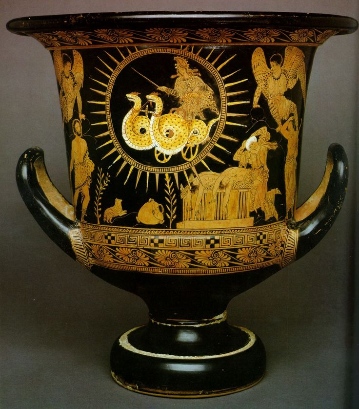

Source Analysis
The tragedy was written by Euripides for the Dionysia festival in 431 B.C.. Sadly, it only won third place. One of the many translations was by Gilbert Murray in 1907, which is the one featured in the PowerPoint. Hamilton didn't provide much information about the author and basically said that Euripides wrote it.
This is the title of a long poem, very popular in classical days, by the third-century poet Apollonius of Rhodes. He tells the whole story of the quest except the part about Jason and Pelias which I have taken from Pindar. It is the subject of one of his most famous odes, written in the first half of the fifth century. Apollonius ends his poem with the return of the heroes to Greece. I added the account of what Jason and Medea did there, taking it from the fifth-century tragic poet Euripides, who made it the subject of one of his best plays.
These three poets are very unlike each other. No prose paraphrase can give any idea of Pindar, except, perhaps, something of his singular power for vivid and minutely detailed description. Readers of the Aeneid will be reminded of Virgil by Apollonius. The differences between Euripides' Medea and Apollonius' heroine and also Virgil's Dido is in its degree a measure of what Greek tragedy was.
These three poets are very unlike each other. No prose paraphrase can give any idea of Pindar, except, perhaps, something of his singular power for vivid and minutely detailed description. Readers of the Aeneid will be reminded of Virgil by Apollonius. The differences between Euripides' Medea and Apollonius' heroine and also Virgil's Dido is in its degree a measure of what Greek tragedy was.
Euripides was a Athenian tragedian that lived from 406 B.C. to 480 B.C.. He wrote 92 to 95 plays, though only 18 or 19 are still intact today.
Art Review

Flight of Medea Krater. 400 B.C. N.p.
The pottery shown above was created by unknown in 400 B.C.. It shows Medea fleeing after her sons' death. The halo around her is signifigant because it shows that she is the granddaughter of Helios, the god of the sun.